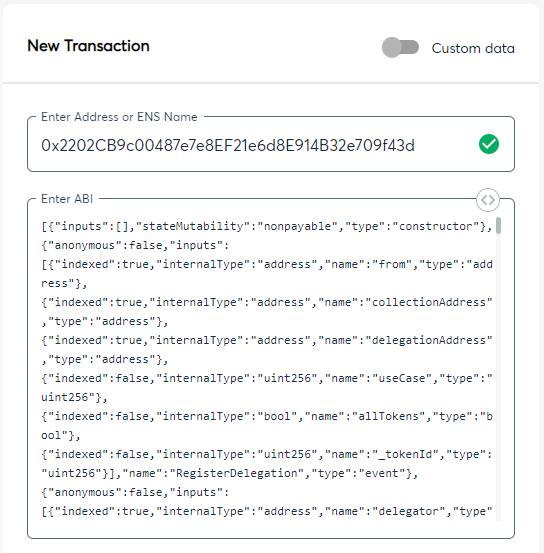
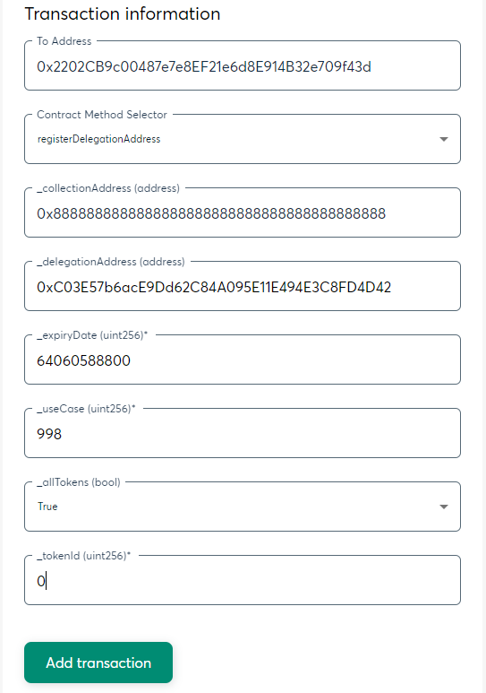
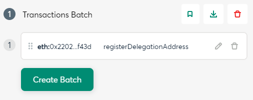
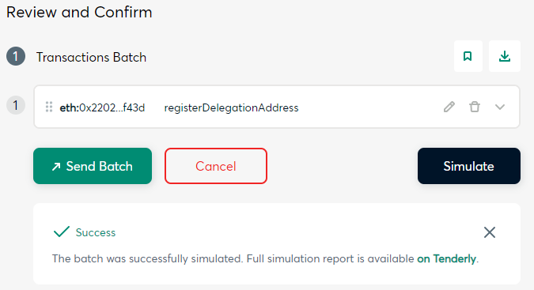
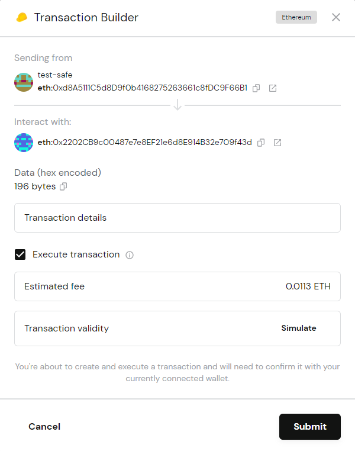

Recommended Approach
The best approach for most Safe users is to set a Delegation Manager to a hotter address such as a Trezor address.
This allows the hotter wallet to make and change delegations on behalf of the Safe without having to sign further transactions from the Safe.
The steps below show how to set a Delegation Manager (Sub-delegation), for all collections and all use cases. This presumes you have already set a up your Safe account as your cold wallet.
If you would like to set a different type of delegation, you would follow the same general process but make different selections for the collection or use cases.
- Connect to the Safe app, access your Safe Wallet, and go to "New Transaction", then launch the Transaction Builder app.
- In the New Transaction Area:
- Enter the NFTDelegation.com smart contract Address: 0x2202CB9c00487e7e8EF21e6d8E914B32e709f43d
- Enter the NFTDelegation.com smart contract ABI. Click here to get the ABI.

- In the Transaction information Area:
- Select registerDelegationAddress as the Contract Method Selector
- Enter the value 0x8888888888888888888888888888888888888888 in the collection address box. This value refers to "Any Collection".
- Enter the delegation address (for the Delegation Manager).
- Enter the value 64060588800 as the expiry date. This value represents "no expiry date".
- Enter the value 998 as the Use Case. This value represents "Delegation Management (Sub-delegation)".
- Enter true in the allTokens input box.
- Enter 0 in the tokenId input box.
- Click the 'Add transaction' button.

- To Execute the transaction:
- Click on the 'Create Batch' button.

- Click on the 'Send Batch' button.

- Click on the 'Submit' button and execute the transaction.
